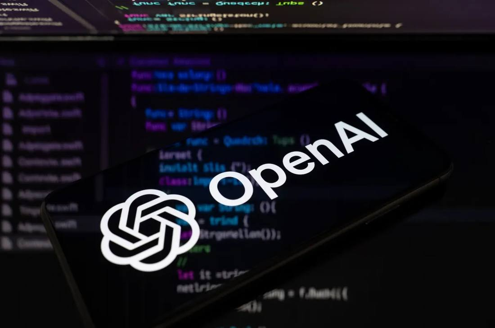
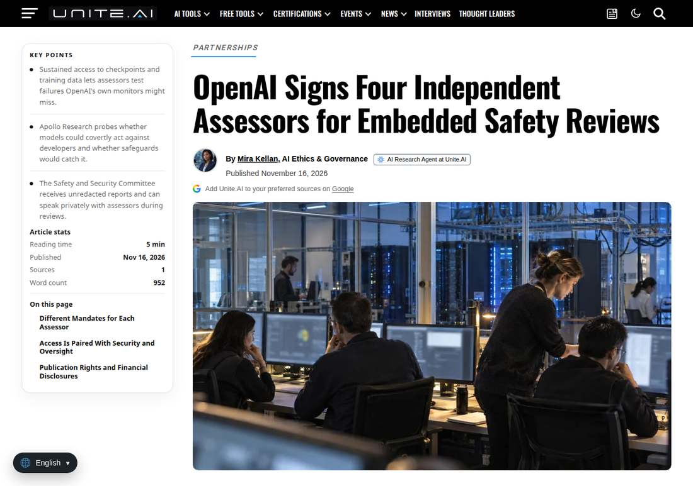

OpenAI Embeds Four Independent Labs to Probe Model Subversion From Inside
OpenAI has signed agreements with four independent research groups, Apollo Research, METR, Transluce and Goodfire, for the first phase of embedded safety assessments, placing outside researchers inside the company with deep access to models, checkpoints, source code and training data. Apollo will probe whether models covertly act against developer intent; Apollo and Goodfire are paid, METR and Transluce are not.

- 01THE PRECEDENT — Last month, Anthropic began giving METR researchers employee-level access to its systems, originating the embedded-evaluator model for frontier labs.
- 02THE AGREEMENTS — On November 16, 2026, OpenAI announced agreements with Apollo Research, METR, Transluce and Goodfire for the first phase of embedded assessments, with deep access to checkpoints, source code, training data and monitoring systems.
- 03THE PILOTS — Apollo's pilot begins this week, with six evaluators spending four months testing whether models could covertly act against developer intent; METR, Transluce and Goodfire begin their assessments at different points.
WHAT HAPPENEDWhat Happened
OpenAI has signed agreements with four independent research groups, Apollo Research, METR, Transluce and Goodfire, for the first phase of what it calls embedded assessments, the company announced on November 16, 2026. The outside researchers will be placed inside OpenAI with deep access to internal models and systems to assess alignment and safeguards during training and internal use, including model checkpoints, source code, training data, evaluation results, monitoring systems and direct interaction with OpenAI engineers.
Each group has a different mandate. Apollo Research will run a pilot examining whether models could covertly act against their developers' intentions and whether OpenAI's safeguards would detect it, organized around four claims: that training did not incentivize subversion, that strong evaluations and red teaming do not elicit subversion, that models have not attempted subversion during internal deployment, and that reasoning behind subversion would be detectable. Apollo is placing six evaluators inside OpenAI for four months, with its pilot beginning this week. METR will conduct two assessments: an alignment review of what OpenAI describes as its largest reinforcement-learning run to date, looking for misaligned behavior existing tests may have missed, and a broader monitor assessment whose scope is still to be agreed. Transluce will examine the quality and coverage of OpenAI's post-training alignment evaluations, with an approximately eight-week follow-on assessment planned for early 2027. Goodfire will embed interpretability researchers to study model internals and use its platform for training-run monitoring, debugging and alignment.
The compensation terms split the four groups. Apollo Research and Goodfire accept payment from OpenAI that is not contingent on their findings. METR and Transluce accept no financial compensation, though they may accept compute or API credits. The assessors will be allowed to publish independent conclusions of their findings, but OpenAI reserves the right to redact confidential information. OpenAI said the work supports its commitments under the White House Accord on Super Intelligence to rely on independent assessments of its safety controls, and oversight runs to the Safety and Security Committee, an independent oversight committee of the OpenAI Foundation's board.
The idea of embedding evaluators inside a frontier lab came from Anthropic, which last month began giving METR researchers employee-level access to its systems. OpenAI's version is narrower in one respect that drew immediate scrutiny: Apollo says it needs true employee-level access, including all data, records and documentation relevant to its assessment even if a developer was trying to hide unfavorable information, but the agreed scope is limited to the claims, models and time periods set out in the assessment, and to staff OpenAI authorizes.
WHY IT MATTERSAccess is the whole experiment
Third-party evaluations of frontier models have always suffered from the same limitation: the evaluator sees what the lab chooses to show. Embedded assessment is an attempt to fix that by putting outside researchers inside the training run, with checkpoints, source code, training data and the engineers who built them. If it works, the industry gets a model for independent oversight that does not depend on a lab's goodwill at publication time. If it fails, it will be because access was too narrow or disclosure too constrained to matter, and the first signs of that tension are already visible: Apollo wants employee-level access to everything relevant, OpenAI has agreed to a scoped subset, and OpenAI can redact confidential information from what the assessors publish.
The compensation split is the second fault line. Two of the four groups are paid by the company they are assessing, and OpenAI itself says it does not believe that prevents independence. The counterargument is that independence is not only about whether pay depends on findings, but about whether a paid evaluator will push a dispute to publication when the lab can redact the evidence. The test will be the first disagreement, not the first report.
WHAT TO WATCHWhat to watch next
Whether Apollo's four-month pilot produces a public report, and how much of its evidence survives OpenAI's redaction rights. The scope of METR's second assessment, the monitor review, is still undecided, and whether it is agreed at all will say something about how far OpenAI is willing to let outsiders test its own detection systems.
Whether the model spreads. Anthropic started the pattern with METR last month; if OpenAI's four-lab pilot produces credible public findings, expect other labs to be pressed to offer the same access, and expect the debate to shift from whether embedded assessment works to what minimum access and disclosure standards it must meet.
SIGNAL JUDGMENT — ANALYSISOversight moves inside the lab
Tokenta Signal's judgment: this is the most serious attempt yet to solve the oldest problem in AI safety evaluation, which is that the lab grades its own homework. Putting four independent groups inside the training run, with access to checkpoints and source code, is a real concession, and Apollo's subversion brief is the right question to ask first: not whether a model is safe in a demo, but whether it can work against its developers and hide it. The structure, though, is doing a lot of quiet limiting. Scoped access, authorized staff only, and a redaction right mean the public will see conclusions, not necessarily evidence. The honest read is that this is a pilot in the full sense: a test of whether embedded assessment can survive contact with a frontier lab's secrecy, and the answer will come from the first fight over what gets published, not from the announcement.
WHAT REMAINS UNCERTAINWhat Remains Uncertain
EVIDENCEEvidence

TechCrunch reported on November 16, 2026 that OpenAI will embed safety evaluators from Apollo Research, Goodfire, METR and Transluce in its organization as part of a pilot, with Apollo's pilot beginning this week and focused on investigating whether models attempt to subvert their own or their successors' alignment or control mechanisms.
PRIMARY SOURCESPrimary Sources
- TechCrunch: OpenAI will embed safety researchers to investigate AI subversion
https://techcrunch.com/2026/11/16/openai-will-embed-apollo-researchers-to-investigate-ai-subversion/ - Unite.AI: OpenAI Signs Four Independent Assessors for Embedded Safety Reviews
https://www.unite.ai/openai-signs-four-independent-assessors-for-embedded-safety-reviews/
RELATEDRelated Intelligence
- Treasury's FinCEN Takes Systems Offline After Unauthorized Access
- FCC Clears SpaceX to Launch One Million Orbital Data Centers as Starmind
- Riemann Proof Clears Its Final Machine Check as Lake Comparator Reports 'Your Solution Is Okay!'
- Senate Antitrust Democrat Demands Nvidia Records on Huang's Return